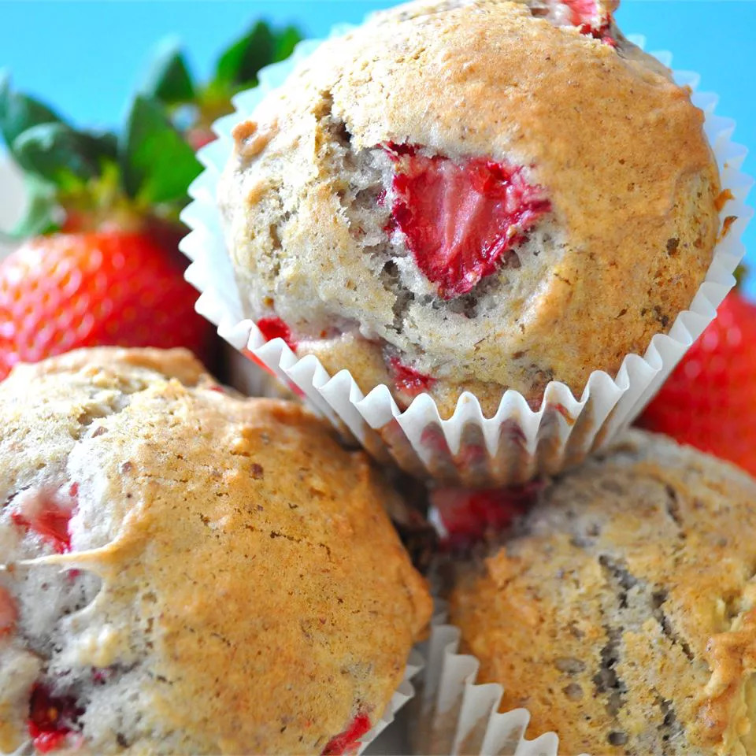

Florida Strawberry Muffins

Description
These are moist and delicious despite the fact that there is no liquid other than the berry juice.
Ingredients
- 1 ½ cups chopped fresh strawberries
- ½ cup white sugar
- ¼ cup white sugar
- ¼ cup butter, softened
- 2 eggs
- 1 teaspoon vanilla extract
- 1 ¾ cups all-purpose flour
- ½ teaspoon baking soda
- ¼ teaspoon salt
- ¼ teaspoon ground nutmeg
Steps
- In a small bowl, combine the strawberries and 1/2 cup sugar. Set aside for 1 hour.
Drain, reserving liquid and berries separately.
- Preheat the oven to 425 degrees F (220 degrees C). Grease a 12 cup muffin tin, or line with paper liners.
- In a medium bowl, cream together the butter and 1/4 cup sugar until light and fluffy.
Beat in the eggs one at a time, then stir in the vanilla. Combine the flour, baking soda, salt and nutmeg;
stir into the creamed mixture alternately with the juice from the berries.
Gently stir in the berries. Spoon batter into the prepared muffin cups.
- Bake for 18 to 20 minutes in the preheated oven, or until the tops spring back when lightly touched.
Cool in the pan on a wire rack.